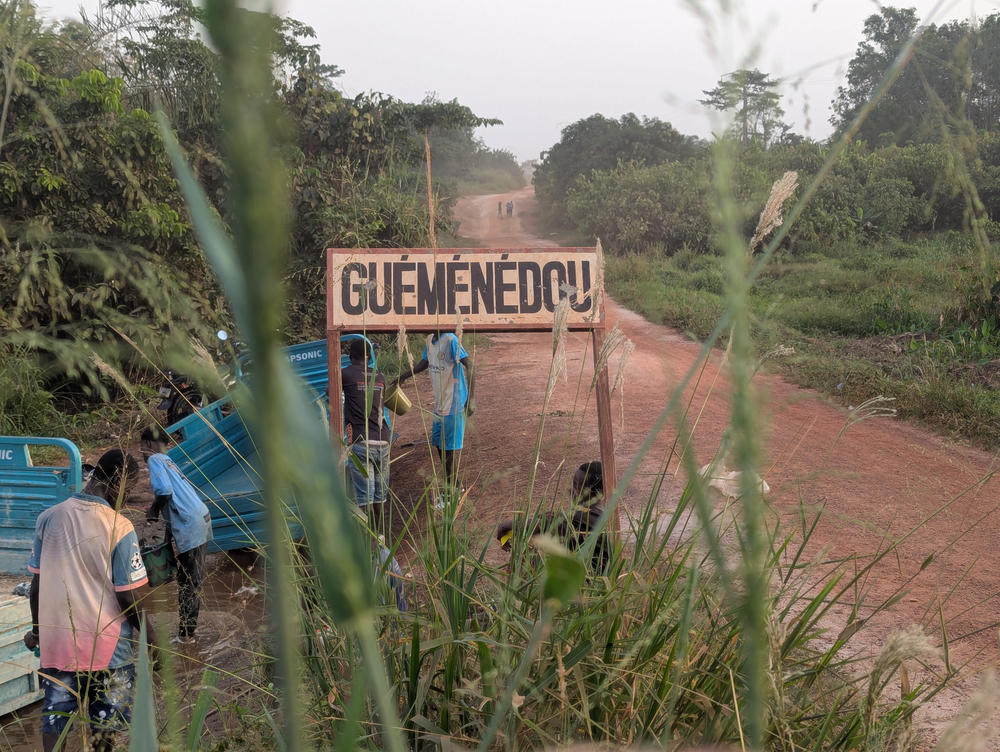

Le village
Un lien direct, depuis l'origine
Guéménédou est le village d'origine d'Achil Gadié Djegna, fondateur de FACIG Awâllé. L'association a été créée pour soutenir les habitants et répondre, avec les relais locaux, à des besoins concrets de la communauté.
Les photos présentes sur cette page ont été prises au village et permettent de montrer le cadre dans lequel s'inscrivent ces actions.